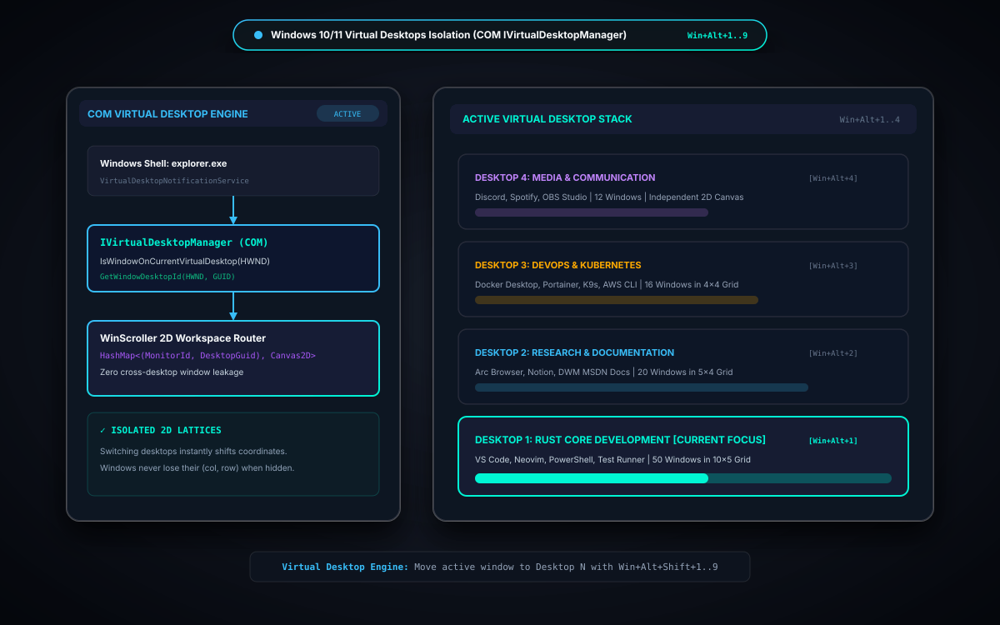
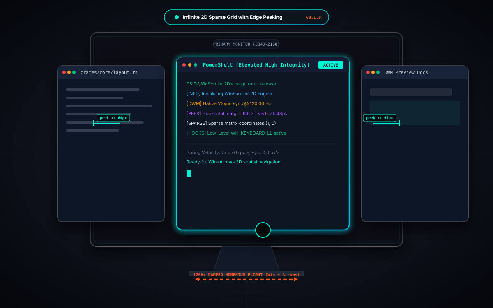
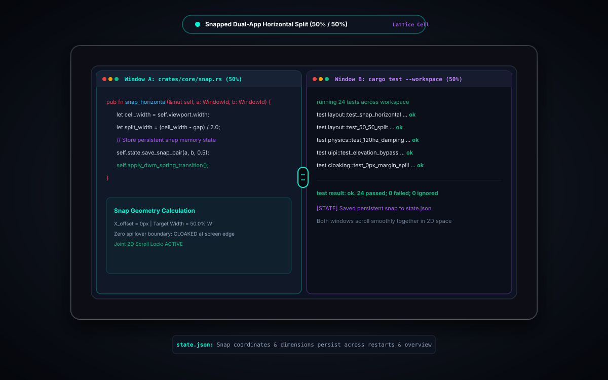
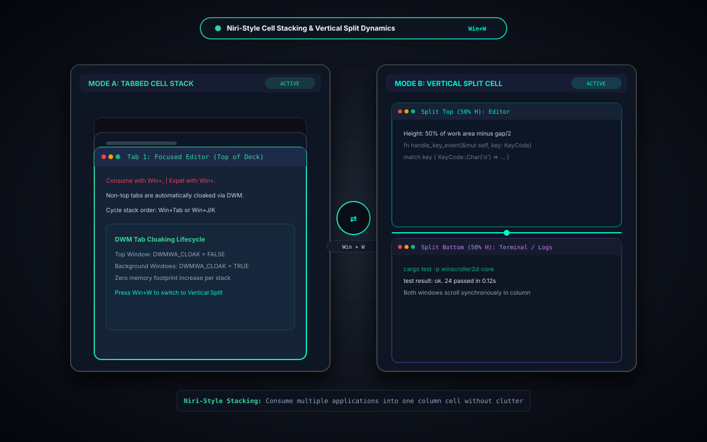
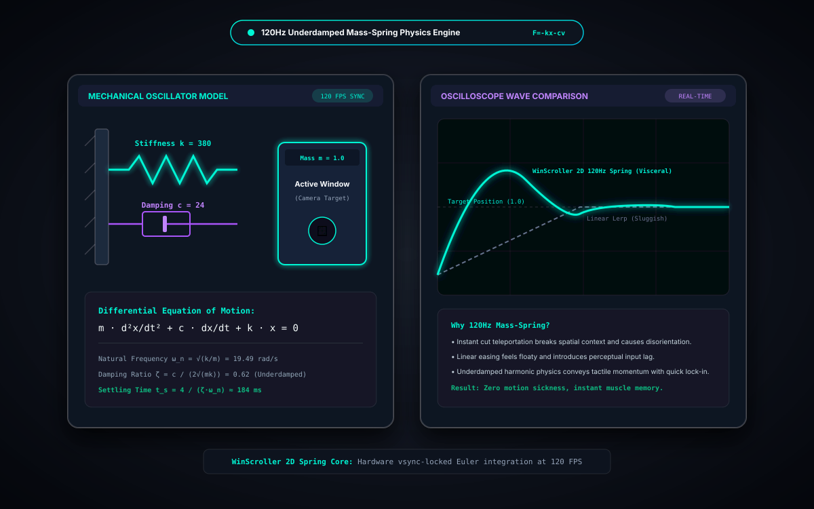
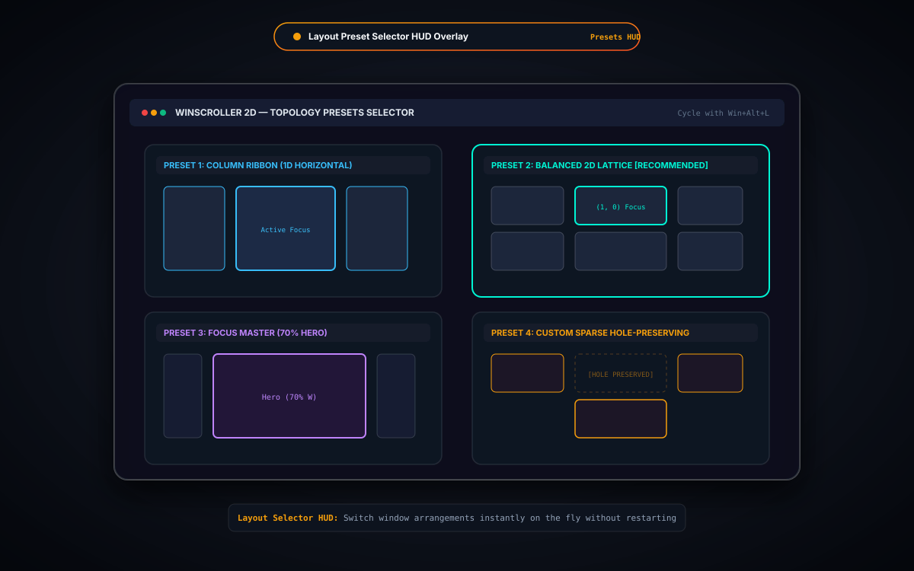

The Infinite 2D Scrolling
Window Manager for Windows
Break out of rigid screen zones. Navigate an unbounded 2D sparse grid with
Niri-style cell stacking, buttery 120Hz mass-spring dynamics,
and an instant Win+O acrylic overview with intuitive drag-to-split snapping.
Experience the 2D Infinite Canvas Live
Test real spring physics, Niri cell stacks, neighbor peeking, and overview drag-snapping directly in your browser.
Visualizing the Core 2D Architecture
Schematic and animated conceptual views of the layout topology, DWM cloaking, spring dynamics, and drag-to-snap geometry implemented in WinScroller 2D.

Live 2D Overview Mode (Win + O)
Conceptual schematic of the full acrylic zoom-out lens. When triggered, the camera pulls back into an unbounded coordinate matrix, revealing live DWM thumbnails, app identity badges, and a magnetic drag-to-snap drop zone.

100-Window Extreme Scale Stress Matrix (10×10 Grid)
Handling 100 managed applications with zero stutter. Offscreen windows (96 cells) are cleanly cloaked using native DWM APIs, preserving RAM footprint at just 24.2 MB while the active camera frustum glides at a locked 120Hz refresh.

Multi-Monitor Extended Matrix (Triple Display Setup)
Seamlessly orchestrates dozens of applications across primary 4K displays, vertical code monitors, and dedicated media screens. Strict 0px edge boundaries guarantee zero window overlap or corner bleed across monitor frames.

Windows 10/11 Virtual Desktops Integration (COM)
Direct hook into COM IVirtualDesktopManager. Each virtual desktop (Rust Core, Docs/Web, DevOps, Communication) hosts an independent, unbounded 2D coordinate lattice with zero window leakage when switching workspaces.

Infinite 2D Sparse Grid & Edge Peeking
Schematic view of the primary display work area with neighbor windows peeking into edge boundaries (peek_x: 64px, peek_y: 48px). Smooth directional camera momentum preserves spatial orientation.

Snapped Dual-App Horizontal Split (50% / 50%)
Architectural breakdown of two independent applications fused into one combined lattice cell. A magnetic snap divider joins both windows so they scroll together as a unified workstation with persistent snap memory in state.json.

Multi-Monitor Extended Mode (Zero Spillover)
Strict hardware display boundaries guarantee zero edge bleed across monitors. Every monitor runs an independent coordinate lattice managed via COM IVirtualDesktopManager with 0px cloaking eliminating title bar slivers.

Niri-Style Stacking: Tabbed Deck vs Vertical Split
Inside any lattice cell, press Win+W to seamlessly toggle between a 3D tabbed card deck (with background windows cloaked) and a 50/50 vertical split layout. Consume windows with Win+, and expel with Win+..

120Hz Underdamped Mass-Spring Physics
Mechanical oscillator model ($m \ddot{x} + c \dot{x} + kx = 0$) synchronized to Windows DWM vsync. The underdamped harmonic wave ensures rapid sub-184ms settling without the perceptual lag of linear lerp.

Layout Preset Selector HUD Overlay
On-the-fly topology switcher (Win+Alt+L) allowing immediate transition between 1D Column Ribbon, Balanced 2D Lattice, Focus Master (70% Hero), and Custom Hole-Preserving Sparse Grids.
Engineered for Keyboard Power Users
Built from the ground up in native Rust with low-level Win32 hooks, COM virtual desktop integration, and zero electron bloat.
Infinite 2D Sparse Grid
Never run out of screen space. Arrange your editors, terminals, browsers, and chats across unbounded (col, row) coordinates with neighbor edge peeking and hole-preserving navigation.
- 5 configurable spawn modes (Right, Bottom, Smart)
- Dynamic row/column hole preservation & auto-compaction
- Configurable
peek_xandpeek_ymargins
Live Win+O Overview Mode
One keystroke pulls back the camera into an expansive acrylic bird's-eye canvas. See live DWM thumbnails of all open applications with bottom-centered identity icons.
- Drag & drop to reorder grid positions
- Drag onto another window to snap 50/50 side-by-side
- Acrylic clear & Gaussian wallpaper blur options
120Hz Mass-Spring Physics
No rigid, instant-cut teleportation or nausea-inducing linear animations. Camera flights and window swaps are paced by an underdamped second-order mass-spring differential system.
- Hardware-synchronized 120Hz DWM refresh loop
- Sub-180ms settling time with natural momentum
- Fully customizable stiffness and damping coefficients
Niri-Style Cell Stacking
Need multiple windows in one cell? Consume (Win+,) and expel (Win+.) windows into tabbed stacks or split them vertically (Win+W) with seamless DWM cloaking.
- Vertical split vs tabbed stacks per cell
- Instant focus cycling inside stacked columns
- Automatic uncloaking and restacking on focus change
Zero-Spillover Multi-Monitor
0px edge peek margins guarantee that off-screen columns and rows are cleanly cloaked with zero leftover title bar slivers or edge artifacts across monitors or virtual desktops.
- Tracks Windows Virtual Desktops via COM
- Independent scrolling workspace per monitor/desktop
- Smart cross-monitor window drag & throw
Automatic UIPI Elevation
Auto-requests Administrator elevation via Windows UAC on startup. High Integrity Level allows low-level keyboard hooks to intercept shortcuts across Task Manager, Administrator PowerShell, and Regedit.
- Never blocked by Windows User Interface Privilege Isolation
- Native
WH_KEYBOARD_LLStart-Menu suppression - Graceful exit uncloaks and restores all windows
The Science of 120Hz Mass-Spring Damping
Standard window managers either snap instantly (jarring) or use linear easing (sluggish). WinScroller 2D uses an underdamped harmonic oscillator.
Tune Your Spring Dynamics
Tweak the parameters below to see the oscillator curve update in real time, or click "Trigger Spring Impulse" to watch the test window snap!
Instant Overview (Win + O)
with Drag-to-Split Snapping
When you're running 15 windows across an infinite canvas, you need a quick mental map. Press Win + O to instantly zoom out over Windows 11 acrylic blur.
Live Win32 DWM Thumbnails
Not static screenshots. Every window in the overview displays real-time video, scrolling, and terminal updates through native DWM thumbnail handles.
Magnetic Drag-to-Snap Dual View
Drag any thumbnail onto another window: they snap together into a 50% / 50% horizontal split cell, scrolling seamlessly as one unit.
Zero Corner Spillover Guarantee
0px edge margins cloak all non-visible workspace columns so no leftover title bars or glow outlines clutter your edges.
Interactive Keybinding Studio
Designed for muscle memory. Search any command or filter by category to inspect default shortcuts.
Live winscroller2d.toml Studio
Configure your ideal window manager parameters visually and download the ready-to-use configuration file.
Spring Physics Parameters
Edge Peeking & Gaps
Overview & Visual Aesthetics
# Generated by WinScroller 2D Config Studio
version = "0.1.0"
[physics]
stiffness = 380.0
damping = 24.0
mass = 1.0
fps_target = 120
[layout]
peek_x = 64
peek_y = 48
gap = 8
zero_spillover = true
spawn_mode = "smart_nearest"
[overview]
blur_mode = "acrylic_clear"
drag_to_split = true
show_dwm_thumbnails = true
badge_icons = true
[theme]
border_color = "#00f5d4"
border_width = 2
inactive_border_color = "#334155"How WinScroller 2D Compares
Engineered to give Windows power users the infinite spatial freedom of Wayland's Niri with native Windows 11 DWM integration.
| Capability | WinScroller 2D | Komorebi | GlazeWM | Niri | Windows 11 Snap |
|---|---|---|---|---|---|
| Target Platform | Windows 10 / 11 | Windows 10 / 11 | Windows 10 / 11 | Linux (Wayland only) | Windows 11 |
| Grid Topology | Unbounded 2D Sparse Grid | Screen-bound BSP | Screen-bound BSP | 1D Ribbon (Horizontal) | 2–4 Static Zones |
| Live Acrylic Overview | Interactive Win+O | None | None | Workspace Overview | Task View (Static) |
| Drag-to-Snap Dual View | Drag onto window (50/50) | No (Keyboard only) | No (Keyboard only) | No | Static 2-split |
| Smooth Motion Physics | 120Hz Underdamped Springs | Instant cut / lerp | Instant cut / lerp | Springs | Fixed OS transition |
| Automatic UIPI Elevation | Auto-UAC High Integrity | Requires service/task | Requires manual task | N/A (Linux Root/User) | Full OS Integration |
| Edge Margin Cloaking | 0px Margin (Zero Spillover) | Edge adjustments | Edge adjustments | Native Wayland crop | Native OS crop |
| Runtime Architecture | Single Standalone Rust .exe | Multi-process + AHK | Standalone Rust | Wayland Compositor | Closed-source OS shell |
Get Up and Running in 3 Minutes
From clean Windows 10/11 install to butter-smooth 2D tiling.
Prerequisites (Clean Windows 10 / 11)
On a clean PC, open an Administrator PowerShell and run winget to install Git, Rust, and the MSVC C++ Build Tools:
# 1. Install Git, Rust, and MSVC toolchain
winget install --id Git.Git --accept-package-agreements --accept-source-agreements
winget install --id Rustlang.Rustup --accept-package-agreements --accept-source-agreements
winget install --id Microsoft.VisualStudio.2022.BuildTools --override "--wait --quiet --add Microsoft.VisualStudio.Workload.VCTools --includeRecommended"Clone Repository & Build with Release Optimizations
# Clone the source repository
git clone https://github.com/fruitsaladwindowsai-zammy/Rust-Window-Tiling-manager.git
cd "Rust-Window-Tiling-manager"
# Compile release binary with 120Hz optimizations
cargo build --releaseInitialize Default Configuration & Run
# Create default config at %APPDATA%\WinScroller2D\winscroller2d.toml
.\target\release\winscroller2d.exe --init-config
# Launch WinScroller 2D (Accept UAC prompt for High Integrity Level)
.\target\release\winscroller2d.exeFrequently Asked Questions
Windows has a security subsystem called User Interface Privilege Isolation (UIPI). Standard non-elevated applications are blocked from intercepting input or managing windows running at higher integrity levels (like Task Manager, Registry Editor, or Administrator PowerShell). WinScroller 2D runs at High Integrity Level so your keyboard navigation works uninterrupted across every window on your system.
Press Win + O to enter overview mode. Then click and drag any window thumbnail and drop it over another window thumbnail. WinScroller 2D will fuse both windows side-by-side into a single 50% / 50% horizontal split cell. When you scroll your 2D canvas, both applications move together smoothly!
Exiting via Win + Shift + Escape or via tray menu executes a graceful cleanup routine: all off-screen cloaked windows are immediately uncloaked, restored to visible state, and centered cleanly in their monitor work area. Zero orphaned or hidden windows.
Yes! Every connected physical monitor and Windows Virtual Desktop hosts its own isolated 2D coordinate lattice. Windows DPI awareness is fully enabled (Per-Monitor V2 DPI Awareness) so text and window frames remain razor-sharp across 100%, 150%, and 200% displays.
Yes. WinScroller 2D includes a high-speed Named Pipe IPC server. You can dispatch commands from PowerShell or scripts anytime with winscroller2d.exe msg <command> (e.g., msg overview, msg retile, msg quit).